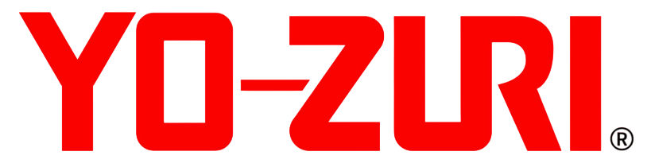
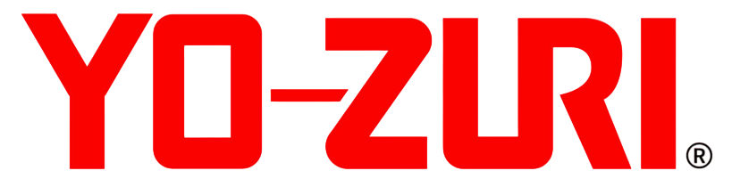

YAMASHITA
YAMASHITA
 DTD

YO-ZURI
DTD

YO-ZURI
 LETOYO
LETOYO
 KINGDOM
KINGDOM
 SQUID KING
SQUID KING
 OTROS
OTROS
En Egis Low Cost encontrarás una selección de señuelos y jibioneras de las marcas más reconocidas para la pesca de calamar y sepia. Trabajamos con fabricantes destacados como Yamashita, DTD, Yo-Zuri, Letoyo, Kingdom y Squid King, ofreciendo modelos eficaces a precios accesibles.
Cada marca dispone de diseños optimizados para diferentes condiciones de pesca, colores específicos, telas de calidad y gramajes que mejoran la presentación del señuelo en el agua. Nuestra colección está pensada tanto para pescadores principiantes como expertos que buscan aumentar sus resultados sin pagar de más.
Explora todas las categorías y encuentra el señuelo ideal para tu zona, temporada y estilo de pesca. Actualizamos nuestro catálogo continuamente para ofrecer siempre las mejores opciones del mercado.